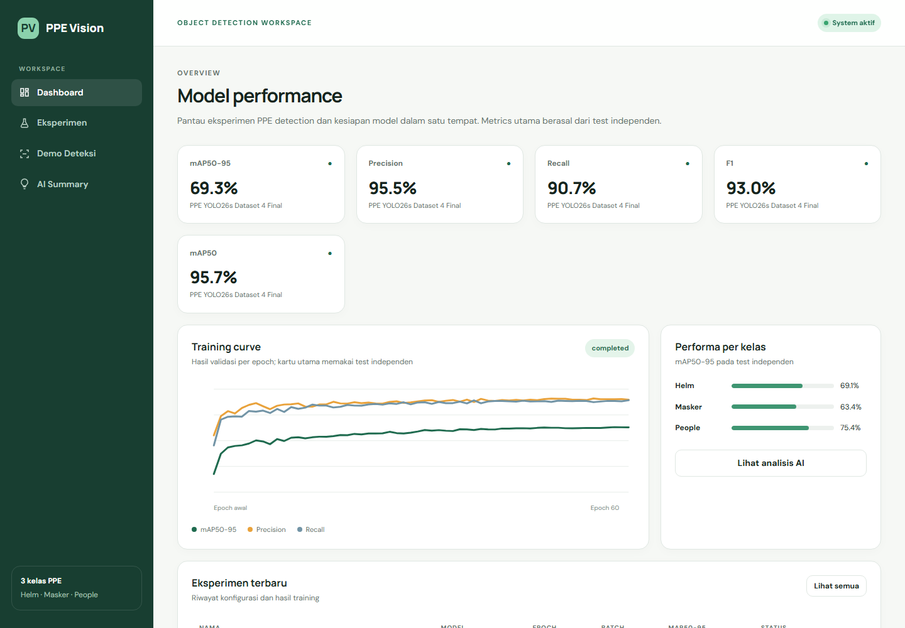
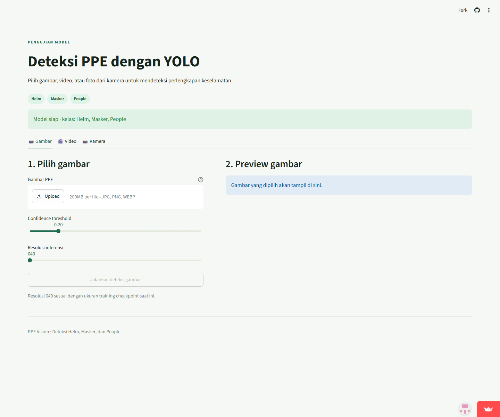
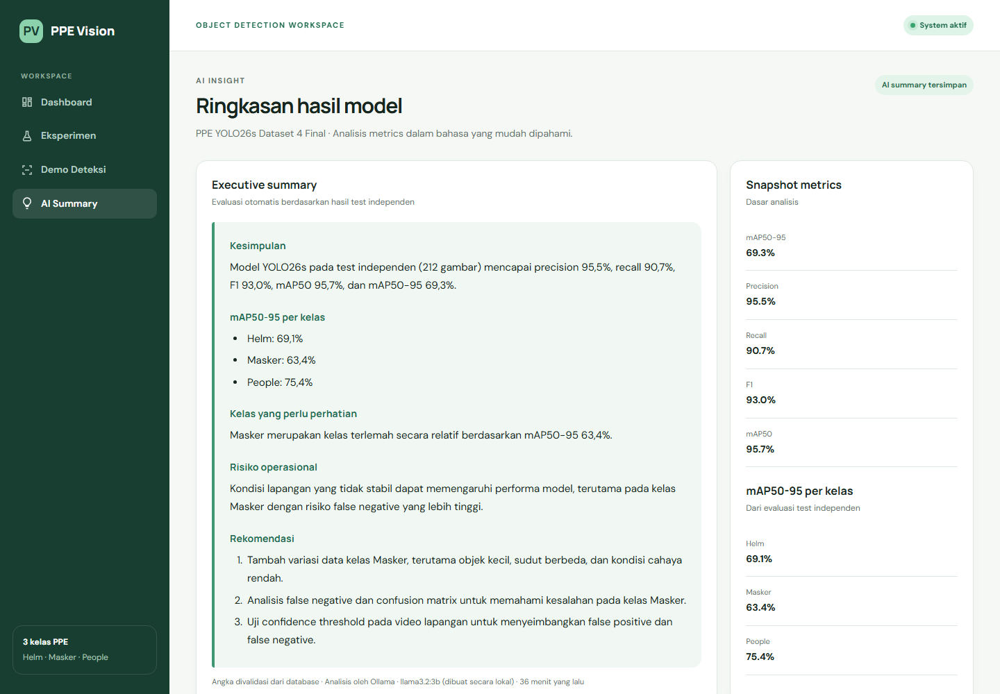

PPE Vision · architecture & integration map
Mapping Alur
Seluruh Sistem
Panduan visual tentang siapa memanggil siapa, data apa yang berpindah, endpoint dan hosting yang digunakan, alur deployment, serta penjelasan jujur tentang peran Ollama dalam AI Summary.
Portal: Laravel 12 · InfinityFree
Inference online: Streamlit Cloud · Python/YOLO
AI summary: Ollama llama3.2:3b · lokal
Tanggal audit: 15 Oktober 2026
InfinityFree bukan API, dan Ollama memang hybrid
InfinityFree itu apa?
InfinityFree adalah hosting untuk menjalankan Laravel/PHP dan MySQL. Laravel tidak “mengambil API InfinityFree”. Browser mengirim request HTTPS ke Laravel yang kebetulan berjalan di server InfinityFree.
Ollama itu apa?
Ollama adalah runtime model bahasa lokal. Laravel lokal memanggil HTTP API Ollama di 127.0.0.1:11434/api/generate.
Apakah Ollama dipakai 100%?
Tidak untuk seluruh isi halaman, dan itu disengaja. Angka, persentase, F1, daftar metrik per kelas, serta kelas terlemah dihitung oleh Laravel dari database. Ollama menghasilkan bagian kualitatif: risiko operasional dan tiga rekomendasi. Laravel kemudian memvalidasi dan menyatukan keduanya.
| Bagian summary | Pembuat | Alasan |
|---|---|---|
| Precision, recall, F1, mAP | Evaluasi YOLO → database → Laravel | Harus presisi dan dapat diuji. |
| Kelas terlemah | Laravel mengurutkan mAP per kelas | Tidak perlu ditebak LLM. |
| Risiko operasional | Ollama, lalu divalidasi | Memerlukan penyusunan bahasa dan konteks. |
| Tiga rekomendasi | Ollama, lalu dinormalisasi Laravel | AI memberi insight tindakan. |
| Fallback | Rule-based Laravel | Halaman tidak gagal ketika Ollama mati. |
Peta pembahasan
Siapa melakukan apa?
| Komponen | Runtime/lokasi | Tanggung jawab | Tidak melakukan |
|---|---|---|---|
| Browser | Perangkat pengguna | Meminta halaman, menampilkan iframe, upload ke Streamlit. | Tidak menghitung metrik. |
| Laravel | PHP · InfinityFree/lokal | Routing, UI, database, validasi, summary orchestration. | Tidak menjalankan bobot YOLO production. |
| MySQL | InfinityFree | Menyimpan eksperimen, metrik, narasi summary. | Tidak memanggil AI. |
| Streamlit | Python · Community Cloud | UI demo dan inference gambar/video/kamera. | Tidak menyimpan dashboard Laravel. |
| Ultralytics YOLO | Di proses Python | Memuat best.pt, menghasilkan box/class/confidence. | Tidak membuat AI Summary. |
| FastAPI | Python lokal, port 8001 | Alternatif REST API inference untuk Laravel lokal. | Tidak aktif di InfinityFree. |
| Ollama | Lokal, port 11434 | Menjalankan llama3.2:3b dan memberi analisis kualitatif. | Tidak dihitung sebagai sumber angka. |
| Colab | Google GPU | Training, random search, evaluasi, menghasilkan artefak. | Tidak menjadi web production. |
| GitHub | Repository | Sumber deploy Streamlit dan version control. | Tidak menyimpan secret. |
| FileZilla | Komputer lokal | Mengunggah paket Laravel ke InfinityFree. | Bukan runtime aplikasi. |
Arsitektur production yang aktif
browser
Laravel 12
data dashboard
halaman /detection
Python UI
inference
Urutan request halaman biasa
https://ppe-vision.infinityfreeapp.com/.public/index.php Laravel.Mapping alur Dashboard dan Eksperimen
model

| Bagian layar | Sumber data | Transformasi |
|---|---|---|
| Lima kartu | training_runs.metrics | Nilai 0–1 dikali 100 dan diformat satu desimal. |
| Training curve | training_history JSON | Titik per epoch menjadi SVG polyline. |
| Per kelas | per_class_metrics | mAP50-95 menjadi panjang bar. |
| Eksperimen terbaru | Lima TrainingRun terbaru | Ditampilkan sebagai tabel. |
| AI Summary | ai_summary tersimpan | Markdown aman menjadi HTML. |
Eksperimen bersifat read-only
Versi final mempertahankan daftar dan detail eksperimen sebagai bukti setting, metrik, serta artefak training. Fitur membuat eksperimen baru dihapus karena tidak menjalankan training dan tidak diminta assessment; training tetap dilakukan di Google Colab.
Mapping alur Demo Streamlit online
/detection ke Laravel.STREAMLIT_DEMO_URL dan menghasilkan URL ?embed=true.<iframe> kepada browser.best.pt, lalu menampilkan “Model siap”.model.predict() menghasilkan box, class, confidence, dan waktu inferensi.
Kenapa browser yang menghubungi Streamlit?
Iframe bekerja client-side. InfinityFree hanya mengirim alamat iframe dalam HTML. Ini menghindari kebutuhan PHP server untuk meneruskan video dan menjalankan Python.
Mapping FastAPI: jalur lokal alternatif
Repository juga memiliki jalur API inference untuk integrasi server-to-server. Jalur ini berguna ketika Laravel dan Python berjalan di komputer/server yang dapat saling menjangkau.
upload gambar
YOLO_API_URL/health; harus mengembalikan status=ready.YoloInferenceService POST multipart ke /predict.127.0.0.1:8001 pada laptop. Production memakai iframe Streamlit sebagai jalur yang tersedia.Mapping AI Summary dengan Ollama lokal
localhost:8000
SummaryController
localhost:11434
http://127.0.0.1:11434/api/generate dengan model, prompt, schema, stream=false.operational_risk dan tepat tiga recommendations.ai_summary dan summary_generated_by disimpan ke database.
Mengapa tidak 100% diserahkan kepada Ollama?
1. Angka tidak boleh dihalusinasikan
LLM dirancang menghasilkan bahasa, bukan menjadi kalkulator sumber kebenaran. Bila prompt berisi 69,299%, model dapat membulatkan, menukar angka, atau menulis metrik yang tidak tersedia. Laravel dapat memformat nilai database secara pasti.
2. Kelas terlemah dapat dihitung deterministik
Mengurutkan tiga nilai mAP adalah operasi sederhana. Menyerahkannya kepada LLM menambah ketidakpastian tanpa manfaat.
3. Halaman harus tetap tersedia
Model lokal pertama kali dimuat bisa lambat, Ollama bisa belum dijalankan, atau request dapat timeout. Fallback membuat pengguna tetap memperoleh ringkasan dasar dan label engine secara jujur.
4. AI tetap benar-benar digunakan
Ollama menyusun risiko dan rekomendasi—bagian yang memerlukan bahasa serta pertimbangan kualitatif. Laravel bukan mengganti hasil Ollama secara total; Laravel menjaga batas agar output relevan dan aman.
| Desain | Kelebihan | Risiko |
|---|---|---|
| 100% LLM | Terlihat “lebih AI”. | Angka bisa salah, format berubah, gagal jika model mati. |
| Hybrid sekarang | Angka akurat, AI memberi insight, fallback tersedia. | Perlu menjelaskan pembagian tanggung jawab. |
| 100% rule-based | Stabil dan cepat. | Tidak membuktikan penggunaan Ollama. |
Mapping training sampai tampil di web
train/val/test
YOLO training
+ gambar evaluasi
+ database seed
best.pt.results.csv, confusion matrix, PR/F1/P/R curves, labels, contoh prediksi.training_runs.Mapping deployment
A. Laravel ke InfinityFree
/htdocs
build-package.ps1menyalin source PHP.- Composer memasang dependency production dan mengoptimalkan autoloader.
- npm membangun asset Vite.
- Paket update-safe dibuat tanpa
.env. - FileZilla mengunggah isi
htdocs. - Laravel menggunakan kredensial MySQL dari control panel.
B. Streamlit dari GitHub
- Streamlit Cloud membaca repository, branch, dan
streamlit_app/app.py. - Dependency dipasang dari
streamlit_app/requirements.txt. - Model bundled diverifikasi checksum jika konfigurasi checksum tersedia.
- Perubahan membutuhkan push/redeploy Streamlit; data input pengguna tidak membutuhkan deploy.
C. Summary lokal ke online
Ollama menghasilkan summary pada database lokal. Agar production menampilkan versi yang sama, teks final tersedia di seeder/record database production. Production hanya membaca dan tidak memanggil Ollama.
Konfigurasi lokal vs production
| Variabel | Lokal | InfinityFree | Makna |
|---|---|---|---|
DB_CONNECTION | sqlite | mysql | Lokasi penyimpanan Laravel. |
YOLO_API_URL | 127.0.0.1:8001 opsional | Kosong | FastAPI hanya jalur lokal. |
STREAMLIT_DEMO_URL | Opsional | URL Streamlit publik | Menentukan iframe demo. |
OLLAMA_ENABLED | true saat generate | false | Ollama hanya dapat diakses lokal. |
OLLAMA_URL | 127.0.0.1:11434 | Tidak dapat menjangkau laptop | Endpoint API model lokal. |
ALLOW_ADMIN_WRITES | true | false | Production read-only. |
APP_DEBUG | true | false | Error sensitif tidak tampil online. |
Mengapa 127.0.0.1 berbeda?
Laravel lokal
127.0.0.1 menunjuk laptop yang sama. Laravel dapat menjangkau Ollama dan FastAPI.
Laravel InfinityFree
127.0.0.1 menunjuk server InfinityFree. Ia tidak pernah berarti laptop Anda.
Endpoint, port, dan data yang lewat
| Dari → ke | Alamat | Metode/data | Aktif di |
|---|---|---|---|
| Browser → Laravel | HTTPS port 443 | GET halaman, POST form | Lokal + production. |
| Laravel → MySQL | Host InfinityFree:3306 | SQL melalui PDO | Production. |
| Browser → Streamlit | HTTPS port 443 | Iframe, upload, WebSocket | Production. |
| Laravel → FastAPI | 127.0.0.1:8001 | GET /health, POST /predict multipart | Lokal alternatif. |
| Laravel → Ollama | 127.0.0.1:11434 | POST /api/generate JSON | Lokal. |
| Browser → Laravel dev | 127.0.0.1:8000 | HTTP lokal | Development. |
| GitHub → Streamlit | Platform integration | Source checkout/build | Deployment. |
| FileZilla → FTP host | FTP/FTPS | File package | Deployment Laravel. |
Yang bukan API runtime
- FileZilla: hanya alat transfer.
- GitHub: source/deployment trigger, bukan endpoint inference.
- InfinityFree control panel: konfigurasi hosting, bukan API aplikasi.
- Colab: lingkungan training, bukan service production.
Trust boundary dan keamanan alur
| Batas | Risiko | Kontrol |
|---|---|---|
| Browser → Laravel | Input berbahaya, CSRF, spam | Validation, CSRF, throttle. |
| Browser → Streamlit | File besar/palsu, kamera | Type check, Pillow safety, izin kamera, batas hosting. |
| Laravel → FastAPI | Service tidak siap, timeout | /health, timeout, MIME/size validation. |
| Laravel → Ollama | Timeout, format salah, halusinasi | Connect timeout, 180s timeout, JSON schema, fallback. |
| Laravel → MySQL | Credential bocor | .env tidak di-Git, update-safe tidak membawa .env. |
| Public admin routes | Data diubah pengunjung | ALLOW_ADMIN_WRITES=false, route 404. |
| Summary → HTML | XSS dari Markdown | Strip HTML dan unsafe links. |
CORS Streamlit final
Origin yang diizinkan kini hanya localhost development dan domain InfinityFree production. Origin Render dan tunnel Cloudflare lama telah dibersihkan.
Mapping arsitektur ke ketentuan assessment
| Ketentuan | Komponen yang membuktikan | Alur |
|---|---|---|
| YOLO + Python | Streamlit/FastAPI + best.pt | Input → model.predict → box/class/confidence. |
| Helm, Masker, People | Model metadata + mapping label | Helmet/Mask/Person → helm/masker/people. |
| Metrik training | Colab → CSV/artefak → DB → Dashboard | Evaluasi → seed/import → visual. |
| Summary menggunakan AI | Laravel → Ollama lokal → validasi → DB | Metrik deterministic + insight AI. |
| Web setting/hasil/demo | Laravel detail + Streamlit iframe | DB → Blade; browser → Streamlit. |
| Point plus Laravel | Route/controller/model/Blade/MySQL | HTTP request → MVC → response. |
| Point plus AI lokal | Ollama llama3.2:3b | POST /api/generate lokal. |
| Online hosting | InfinityFree + Streamlit Cloud | Browser dapat mengakses keduanya via HTTPS. |
Demo integrasi yang meyakinkan
Sebelum presentasi lokal
Urutan demo 6 menit
- Portal online: buka dashboard InfinityFree dan jelaskan hosting PHP/MySQL.
- Demo: buka /detection; jelaskan browser memuat Streamlit iframe secara langsung.
- YOLO: uji gambar; tunjukkan bounding box dan tiga kelas.
- Metrics: kembali ke dashboard/detail dan tunjukkan data test/artefak.
- AI lokal: buka Laravel lokal → AI Summary → “Buat ulang dengan Ollama”.
- Bukti engine: tunjukkan “Analisis oleh Ollama · llama3.2:3b”.
- Keamanan: jelaskan production menampilkan hasil tersimpan dan tidak membuka Ollama.
Kalimat presentasi
Tanya-jawab integrasi
Checklist pemahaman
- □ Dapat menjelaskan InfinityFree adalah hosting, bukan API.
- □ Dapat menggambar jalur browser → Laravel → MySQL.
- □ Dapat menggambar jalur browser → Streamlit → YOLO.
- □ Dapat menjelaskan FastAPI hanya alternatif lokal.
- □ Dapat menjelaskan Laravel → Ollama lokal → DB.
- □ Dapat menjelaskan mengapa summary online tidak live ke Ollama.
- □ Dapat mempertahankan alasan desain hybrid.